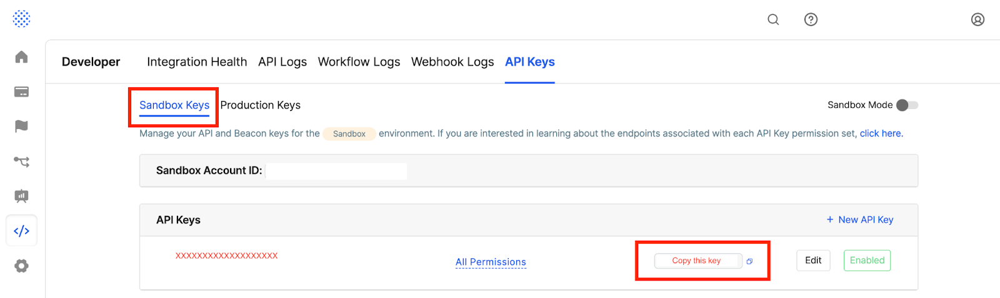

Sift Connector ¶
Author:Inayat Shariff and Owen Barnes
Introduction ¶
The Sift > Ping Connector can be used to protect your revenue from fraud by leveraging the Sift Score and Decisions API to get accurate risk profiling on your Customers. In addition, the Sift score can be used to create smoother workflows for good Customers by ensuring minimal friction is used for trusted users, both familiar and unfamiliar.
For example, you can use the Sift connector to retrieve a Sift score to determine the riskiness of a given log-in event. If the score returns low, you can skip additional friction such as certain types of verification or velocity checks on subsequent purchases, while quarantining high score accounts to limit their ability to engage with certain aspects of your business.
Sift uses cutting edge technology and its cohort data model to review the risk of users across a wide Customer base.
For more information, see the Sift API Documentation
Resources ¶
For information and setup help, see the following sections of the Sift documentation:
Requirements ¶
To use the connector, you'll need:
- A valid Ping account with the Sift Connector added
- Sift Science credentials
- Sift Science API keys
Sift Console Set up ¶
Configure Sift Decisions. Create a test Sift Workflow. Copy the Sift Sandbox API key.
Configure Sift Decisions In the Sift Console navigate to Automate > Decisions.
Create or edit Sift Decisions for Users based on the following categories: - Category "Accept" - Category "Block" - Category "Watch"
For each Category, the configured decision will need to align with the decisions configured in DaVinci. Create a test Sift Workflow.
Next, navigate to Automate > Workflows.
Here you will configure a new Workflow that will generate an automated decision or review case for each login attempt.
Full instructions for configuring Workflows can be found here
Copy the Sift Sandbox API key.
Before managing real login events, you can test the Sift set up by configuring DaVinci to use the SIft sandbox environment, To do this, navigate to Developer > API Keys and

You will use this Sandbox API key in the next section, Setting up the Connector
Setting up the connector ¶
In DaVinci, add a Sift connection. In DaVinci, Navigate to the Connectors tab > select “+Add Connector” > search for Sift > select the “+” button to add it to your connector library.
In most applications it will be necessary to capture device information for browser and/or mobile apps. Device information provides Sift with more intelligence to accurately identify potentially suspicious actions. With Sift device information is captured by integrating Sift’s JS Snippet (browser) or Mobile SDK (mobile app). Instructions for both are available here:
JS Snippet integration instructions Mobile SDK integration instructions
Connector settings ¶
The Sift connector only requires the Sift API Key as part of its general configuration. Please see Step 3 of the Sift Console Set Up section for where to access and how to copy this key.
Capability specific configuration is located under the “Capabilities” section below.
Capabilities ¶
Each capability has its own unique configuration, with the exception of these standard fields for Event driven capabilities:
- Workflow Status: Receive the Workflow Decision synchronously when sending an event to Sift.
- Return Score: Get scores back when sending an event.
- Abuse Types: The type of abuse for which you want to send a label.
- Score Percentiles: Include scores percentiles when sending an event - this feature must be enabled as part of your plan.
See below for the specific configuration required per capability:
Record Login Event ¶
- Login Status (required): Use Login Status to represent the success or failure of the login attempt. Allowed values are Success or Failure.
- Failure Reason: Capture the reason for the failure of the login.
- User ID (required): The user's account ID according to your systems. Note that user IDs are case sensitive.
- Session ID (required): The user's current session ID, used to tie a user's action before and after log in or account creation. NOTE: this is required if no $user_id is provided.
- IP Address (required): IP address of the user that is logging in.
- Email: Email of the user logging in. Note: If the user's email is also their account ID in your system, set both the User ID and Email fields to their email address.
- Phone Number: Phone number of the user. This phone number will be used to send One-Time Password (OTP) when required. The phone number should be in E.164 format including + and a country code.
- Username: The username entered at the login prompt.
- User Agent: The user agent of the browser that is interacting with your website.
- Accept Language: The language(s) that the client is requesting the site content be delivered in. Use ISO-3166 format for country codes. Examples: 'en', 'en-us, de', 'fr-CH, fr;q=0.9, en;q=0.8, de;q=0.7, *;q=0.5', etc.
- Content Language: The language(s) of the user that the delivered site content is intended for. Use ISO-3166 format for country codes. Examples: 'en', 'en-us, de', 'fr-CH, fr;q=0.9, en;q=0.8, de;q=0.7, *;q=0.5', etc.
Record Logout Event ¶
- User ID (required): The user's account ID according to your systems. Note that user IDs are case sensitive.
- IP Address: IP address of the user that is logging out.
- User Agent: The user agent of the browser that is interacting with your website.
- Accept Language: The language(s) that the client is requesting the site content be delivered in. Use ISO-3166 format for country codes. Examples: 'en', 'en-us, de', 'fr-CH, fr;q=0.9, en;q=0.8, de;q=0.7, *;q=0.5', etc.
- Content Language: The language(s) of the user that the delivered site content is intended for. Use ISO-3166 format for country codes. Examples: 'en', 'en-us, de', 'fr-CH, fr;q=0.9, en;q=0.8, de;q=0.7, *;q=0.5', etc.
Record Create Account Event ¶
- User ID (required): The user's account ID according to your systems. Note that user IDs are case sensitive.
- Session ID: The user's current session ID, used to tie a user's action before and after log in or account creation.
- Email: Email of the user creating the account. Note: If the user's email is also their account ID in your system, set both the $user_id and $user_email fields to their email address.
- Phone Number: Phone number of the user. This phone number will be used to send One-Time Password (OTP) when required. The phone number should be in E.164 format including + and a country code.
- Full Name: The full name of the user
- Primary Phone Number: Primary phone number of the user.
- Billing (Name, Phone Number, Address, City, Region, Country, Zip Code)
- Shipping (Name, Phone Number, Address, City, Region, Country, Zip Code)
- IP Address: IP address of the user creating an account
- User Agent: The user agent of the browser that is interacting with your website.
- Accept Language: The language(s) that the client is requesting the site content be delivered in. Use ISO-3166 format for country codes.
- Content Language: The language(s) of the user that the delivered site content is intended for. Use ISO-3166 format for country codes.
Record Updated Account Event ¶
- User ID (required): The user's account ID according to your systems. Note that user IDs are case sensitive.
- Changed Password: Track password changes via Update Password. If the user changed their password, set this field and mark as true. Additionally, Sift's recommended approach is to send the Update Password reserved event.
- Email: Email of the user creating the account. Note: If the user's email is also their account ID in your system, set both the $user_id and $user_email fields to their email address.
- Phone Number: Phone number of the user. This phone number will be used to send One-Time Password (OTP) when required. The phone number should be in E.164 format including + and a country code.
- Full Name: The full name of the user.
- Billing (Name, Phone Number, Address, City, Region, Country, Zip Code)
- Shipping (Name, Phone Number, Address, City, Region, Country, Zip Code)
- IP Address: IP address of the user that is updating an account.
- User Agent: The user agent of the browser that is interacting with your website.
- Accept Language: The language(s) that the client is requesting the site content be delivered in. Use ISO-3166 format for country codes.
- Content Language: The language(s) that the client is requesting the site content be delivered in. Use ISO-3166 format for country codes.
Record Password Update Event ¶
- User ID (required): The user's account ID according to your systems. Note that user IDs are case sensitive.
- Session ID (required): The user's current session ID, used to tie a user's action before and after log in or account creation. NOTE: this is required if no $user_id is provided.
- Status (required): The status of the password update event.
- Reason (required): The reason the password was updated or an update was attempted. The process may trigger a verification (with $verified_event = $update_password).
- Email: Email of the user logging in. Note: If the user's email is also their account ID in your system, set both the $user_id and $user_email fields to their email address.
- Phone Number: Phone number of the user. This phone number will be used to send One-Time Password (OTP) when required. The phone number should be in E.164 format including + and a country code.
- IP Address: IP address of the user that is logging in.
- User Agent: The user agent of the browser that is interacting with your website.
- Accept Language: The language(s) that the client is requesting the site content be delivered in. Use ISO-3166 format for country codes.
- Content Language: The language(s) that the client is requesting the site content be delivered in. Use ISO-3166 format for country codes.
Record Verification Event ¶
- User ID (required): The user's account ID according to your systems. Note that user IDs are case sensitive.
- Session ID (required): The user's current session ID, used to tie a user's action before and after log in or account creation.
- Status (required): The status of the verification event.
- Verified Reason: The trigger for the verification.
- Verification Type: The type of verification being performed.
- Verified Value: The phone number, email or question used for verification.
- IP Address: IP address of the user.
Record Link Session to User Event ¶
- User ID (required): The user's account ID according to your systems. Note that user IDs are case sensitive.
- Session ID (required): The user's current session ID, used to associate Javascript page events with their REST API counterparts.
- IP Address: IP address of the request made by the user.
Apply Decision ¶
- Account ID: Your Sift Account ID, which can be found in the Sift Console under the Developer Tab
- User ID: The user's account ID according to your systems. Note that user IDs are case sensitive.
- Session ID Decision: The user's current session ID, used to associate Javascript page events with their REST API counterparts.
- Decision Type: The Apply Decisions API allows you to apply Decisions to users or sessions.
- Decision ID: The unique identifier of the Decision to be applied to an entity.
- Source (required): The source of this Decision.
- Analyst: Analyst who applied the Decision, only required when source is set to Manual Review. Does not need to be an email, can be any analyst identifier.
- Description: A description of the Decision that will be applied.
Get Decision Status ¶
- Decision Type: The Get Decisions API allows you to retrieve Decisions on users or sessions.
- Account ID (required): Your Sift Account ID, which can be found in the Sift Console under the Developer Tab
- User ID: The user's account ID according to your systems.
- Session ID Decision: The user's current session ID, used to tie a user's action before and after log in or account creation.
Make Custom API Call ¶
- Endpoint (required): API Endpoint
- Method (required): Method (ex. GET, POST, etc.)
- Query Parameters
- Headers
- Body
Using the connector in a flow ¶
You can use the connector in a variety of use cases, such as:
Record Login Event ¶
Use Login to record when a user attempts to login.
Record Logout Event ¶
Use Log out to record when a user logs out.
Record Create Account Event ¶
Use Create Account to capture user details at account creation.
Record Updated Account Event ¶
Use Update Account to record changes to the user’s account information.
Record Password Update Event ¶
Use Password Update to record all password changes, whether initiated by the user or the service.
Record Verification Event ¶
When a user attempts a high-value activity (e.g., login, view or change account information) that you deem risky, you may decide to verify whether the user is who they say they are.
Record Link Session to User Event ¶
Use Link Session to User to associate data from a specific session to a user. Generally used only in anonymous checkout workflows.
Apply Decision ¶
The Apply Decisions API allows you to apply Decisions to users or sessions.
Get Decision Status ¶
The Decision Status API allows you to query the latest Decision for an entity. Sift returns the latest Decision status for each abuse type so that you have a full view of the entity.
Make Custom API Call ¶
Define a custom API call to Sift.